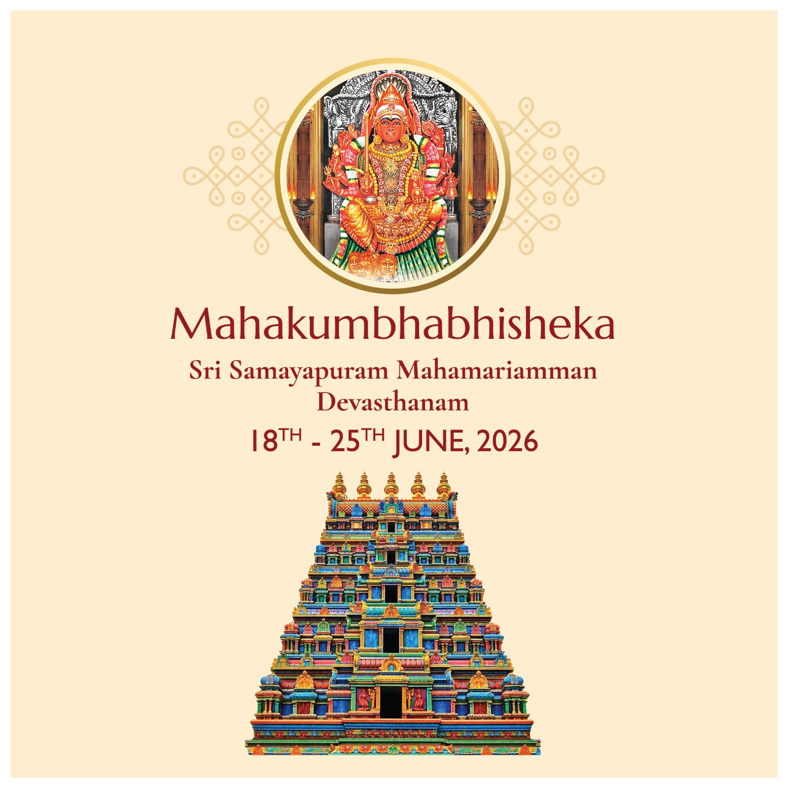
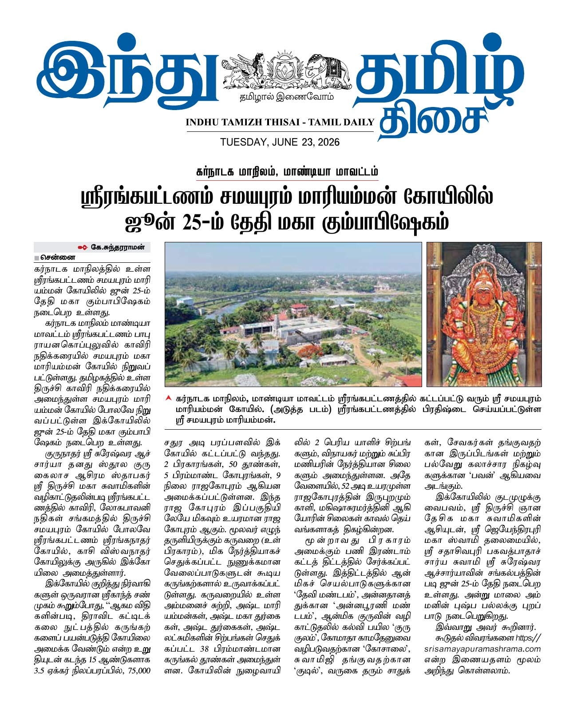

Maha Kumbhabhishekam — Successfully Celebrated!
The grand consecration ceremony of Sri Samayapuram MahaMariamman Devasthanam was successfully celebrated from 18th to 25th June 2026. This historic event marked the completion of Phase 1 of the temple construction and the formal installation of the deity.
Thousands of devoted bhaktas participated in this most auspicious ceremony, during which the divine energy of Goddess Sri Samayapuram MahaMariamman was invoked and established in the sanctum sanctorum. The temple is now open for all devotees.
Events & Temple Calendar
Stay updated with temple activities
Maha Kumbhabhishekam
Grand consecration ceremony of the temple. The most awaited event marking the completion of Phase 1 — celebrated with great devotion.
CompletedMandala Pooja — 48 Sacred Days
48 days of uninterrupted daily rituals following the Kumbhabhishekam — Abhishekam, Homam, Alankaram, and Special Poojas performed continuously. Participating yields the same spiritual merit as attending the Kumbhabhishekam itself. All devotees are warmly invited to visit and sponsor a day's pooja.
Active — Ends 9 Aug 2026Navaratri Celebrations
Nine nights of devotion dedicated to the Goddess. Special poojas, cultural programs, and community gatherings.
UpcomingDaily Poojas & Abhishekams
Morning: 6:00 AM – 12:00 Noon | Evening: 5:00 PM – 8:00 PM. Special Abhishekams on Tuesdays and Fridays.
ActiveAnnadaan — Community Feeding
Free meals served to 500+ people daily at the AnnaPoorni Dining Hall. Special feasts on Pournami (Full Moon) days.
ActiveLatest News
Updates from the temple

23 June 2026Temple Featured in Tamil Daily — Indhu Tamizh Thisai
The upcoming Maha Kumbhabhishekam was covered by Indhu Tamizh Thisai Tamil Daily on 23rd June 2026, highlighting the temple's 15-year journey, Dravidian architecture, and the grand consecration ceremony.
 24 June 2026
24 June 2026
Dinamalar Covers the Grand Consecration
Dinamalar, one of Tamil Nadu's leading dailies, featured the temple on 24th June 2026 — covering the 33 fire altars, 92 acharyas from Tamil Nadu and Karnataka, the 52-ft Raja Gopuram, and the 15-year journey of building this Dravidian marvel. Read the article →
Maha Kumbhabhishekam Celebrated with Grand Devotion
The Maha Kumbhabhishekam was successfully completed on 25th June 2026, marking the consecration of the Garba Griha, Maha Mandapam, and the first Pragaram. The temple is now open for all devotees.
 March 2026
March 2026
Intricate Stone Carvings Taking Shape
The 38 stone pillars with Goddess carvings (Vigrahams) are being sculpted by skilled Shilpis. Each pillar features detailed carvings of the Ashta Mari, Ashta Matrika, Ashta Lakshmi, and Ashta Durga.
 February 2026
February 2026
Donation Drive for Raja Gopuram Construction
Phase 2 fundraising has begun for the construction of the magnificent 108 ft Raja Gopuram. Generous contributions from devotees are welcome.
For Temple Administrators: This section can be updated regularly with new events, news, and announcements. Contact the web administrator to add or modify content.